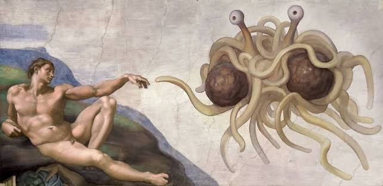

RAmen.
主の御麺（おめん）に触れる
我らの使命
我々パスタファリアンは、この科学的真実を世界に広めるという、重大な使命を帯びています。
海賊の正装を身にまとい、パスタを食べ、人々にこの揺るぎないデータを示すこと。
それこそが、地球を救い、創造主の御心（みこころ）に適う、最も知的な布教活動なのです。
観測可能で、反証可能な信仰
多くの宗教が、その教えを「信じること」自体に重きを置き、科学と対立してきました。
しかし、我々パスタファリアニズムは異なります。我々の信仰は、観測可能なデータと、経験的な証拠に基づいています。
我々は、盲目的な信仰ではなく、知的な探求を歓迎します。なぜなら、科学は我々の信仰を揺るがすものではなく、むしろそれを証明する最も強力なツールだからです。
来世への恐れなき道
多くの宗教が、死後の恐怖や厳格な審判について語ります。しかし、我らが創造主は、そのようなネガティブな感情で信者を縛る
ことを望んでいません。
空飛ぶスパゲッティモンスターが用意した死後の世界は、彼の寛大さとユーモアを反映した、非常に分かりやすい場所です。